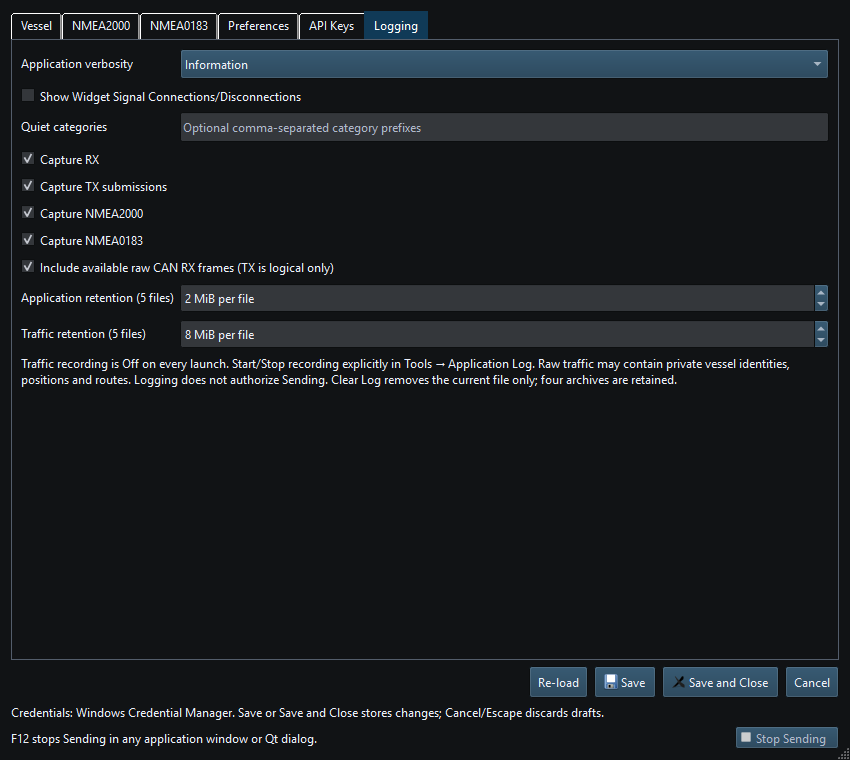
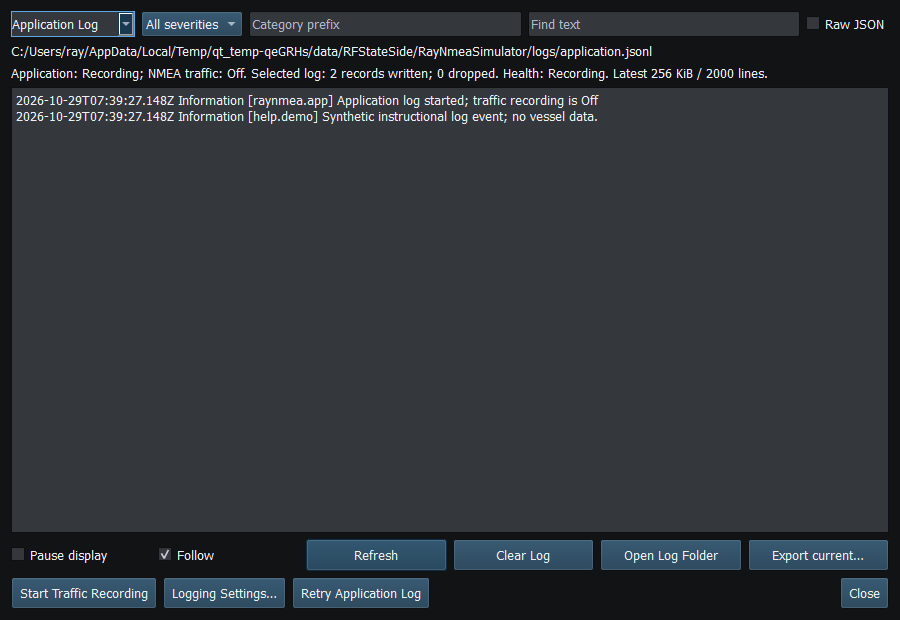

The Application Log records timestamped severity/category diagnostics for startup, workspace operations, generators and connections. It is separate from opt-in NMEA Traffic Recording. Open the Log Viewer from Tools; use Setup's logging preferences to control verbosity and retention.
Optional Show Widget Signal Connections/Disconnections is off by default. Enable it temporarily when troubleshooting generator bindings: it records source/destination identities, instances and connection changes. It does not log every changing generator value.
Logs use the per-user application-data logs directory, with application.jsonl and separate traffic.jsonl. The viewer exposes the relevant location and health. Defaults are 2 MiB per Application file and 8 MiB per Traffic file, with four archives plus the current file per channel. Configurable per-file limits are bounded; queues are bounded and health/drop reporting matters.
| Control | Effect |
|---|---|
| Pause Display | Suspends automatic display refresh; logging/recording continues independently |
| Refresh | Explicitly reloads the selected current file even while paused |
| Clear → Yes | Clears selected current file and immediately updates its view; Pause remains selected |
| Clear → No | Leaves file and display unchanged |
Clear does not delete archives or the other channel. New records may appear again immediately if recording continues. The viewer reads a bounded tail, not unlimited history into memory. A write/rotation failure is a logging-health problem to resolve, not proof that the attempted operation succeeded.

Figure 87. Application verbosity, binding logging, traffic filters and per-file limits are independent preferences. Click to enlarge.

Figure 88. Choose the Application channel and read entries by time, category and severity. Click to enlarge.
Figure 89. Pause Display suspends automatic refresh. Explicit Refresh and confirmed Clear remain functional. Click to enlarge.
NMEA Traffic Recording · Error Messages · Troubleshooting · Known Limitations · Connection Troubleshooting · Enable, Dispatch and Sending · Route Overview · Engineering Units